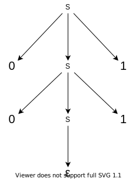

142.
Постройте КС-грамматику для правильных скобочных последовательностей с
двумя типами скобок. В этом и следующих заданиях, после разработки КС
грамматики необходимо выбрать в качестве примера слово и
продемонстрировать его левосторонний вывод и дерево разбора.
\(\Sigma = \{(,[,],)\},
N=\{S\}\)
\(S\to SS \quad S\to [S] \quad S\to (S)
\quad S\to\varepsilon\)
143. Постройте
КС-грамматику для языка \(0^n1^n\).
\(\Sigma = \{0,1\}, N = \{S\}\)
\(S\to 0S1 \quad
S\to\varepsilon\)
Слово: \(0011\)
\(S\to 0S1\to 00S11\to 0011\)

144.
Постройте КС-грамматику для языка слов над алфавитом \(\{0,1\}\), в которых число нулей равно
числу единиц. Докажите, что ваша грамматика является правильной.
\(\Sigma = \{0,1\}, N = \{S\}\)
\(S\to SS \quad S\to 0S1 \quad S\to 1S0
\quad S\to\varepsilon\)
Докажем верность по индукции по длине слова:
База: \(\varepsilon\in
L\), \(\varepsilon\) можно
получить этой грамматикой
Переход: Все слова длины \(\le 2n-2\) можно получить, докажем что
слово длины \(2n\) тоже можно получить.
\(\mathfrak H(k):=\#_0 - \#_1\) на
префиксе длины \(k\). Пусть первый
символ это \(0\), тогда \(\mathfrak H(1)=1\), обратный случай
симметричен. Тогда есть два случая:
Последний символ слова это \(1\).
\(w=0v1, v\in L \Rightarrow\) можно
сгенерить из \(v\) по правилу 2.
Последний символ слова это \(0\).
Тогда т.к. \(\mathfrak H(2n)=0\) по
определению \(L\), \(\mathfrak H(2n-1)=-1\). \(\exists \overline n<2n : \mathfrak H(\overline
n)=0\). Разобьем \(w\) на две
части \(w[0:\overline n], w[\overline
n:]\), оба эти слова можно построить грамматикой и по \(S\to SS\) конкатенацию слов тоже можем
построить. \(\square\)
Слово: \(001101\)
\(S\to 0S1\to 0SS1\to 001S1\to
001101\)
145.
Постройте КС-грамматику для языка слов над алфавитом \(\{0,1\}\), в которых число нулей равно
удвоенному числу единиц. Докажите, что ваша грамматика является
правильной.
Аналогично 144.
TODO: дерево
146. Постройте
КС-грамматику для языка \(0^k1^n2^{k+n}\).
147.
Постройте КС-грамматику для языка \(0^k1^n2^{k+n}\cup 1^k0^n2^{k+n}\). Сделайте
вывод про КС языки.
\(N = \{S, Q, R\}\cup \overline N_1 \cup
\overline N_2\), черта переименовывает \(S\) в \(Q\) или \(R\)
\(S\to Q \quad S\to R \quad\)\(S\) флексит для первого языка, \(R\) для второго.
Вывод: КС языки замкнуты по объединению
(конечному)
TODO: дерево
148.
Постройте КС-грамматику для языка \(0^k1^n2^{k+n}1^i0^j2^{i+j}\). Сделайте
вывод про КС языки.
\(N = \{S, Q, R\}\cup N_1 \cup
N_2\)
\(S\to QR \quad\)\(Q\) флексит для первого языка, \(R\) для второго.
Вывод: КС языки замкнуты по конкатенации
(конечной)
TODO: дерево
149.
Пусть задана КС-грамматика для языка \(L\). Укажите, как построить КС-грамматику
для языка \(L^*\).
\(N = \{S\} \cup \overline N_L\)
\(S\to SS_L \quad
S\to\varepsilon\)
150.
Пусть задана КС-грамматика для языка \(L\). Обозначим как \(L^R\) язык, составленный из слов, которые,
если их прочитать от конца к началу, принадлежат языку \(L\). Укажите, как построить КС-грамматику
для языка \(L^R\).
\(N = N_L\)
\(P = \{\langle A, w^R\rangle\ |\ \forall
\langle A, w\rangle \in P_L\}\)
151.
Постройте КС-грамматику для языка \(0^i1^j2^k\), \(i≠j\) или \(j≠k\).
Доказательство: - “\(\Rightarrow\)”
Очевидно, что все сгенерированные слова - не ПСП. - “\(\Leftarrow\)” - Если слово кончается на
\((\), то оно подходит для пустой ПСП
справа - Если слово начинается на \()\), то оно подходит для пустой ПСП слева -
Если слово \((w)\), то в хз
Альтернативное доказательство по индукции по длине строки: -
База: минимальные строки не ПСП это \((\) и \()\), обе строятся для \(V=U=\varepsilon\) -
Переход: - Если \(w=v)\) или \(w=(v\), где \(v\) - ПСП, то строится для \(V=\varepsilon\) - Если \(w=v)\), \(v\) не ПСП, то \(v\) либо 1, либо 2 вида: 1. \(w=U)V)\) - первого вида 2. \(w=V(U)\) - Последний символ \(V\) это \((\), тогда \(w=\overline V((U)=\overline V(\overline U\)
- второго вида - Последний символ \(V\)
это \()\), тогда \(w=\overline V)(U)\) - Первый символ \(V\) это \()\), тогда первый вид с пустым \(U\) -
TODO: доказать, дерево, вывод слова
154.
Постройте КС-грамматику для языка слов над алфавитом \(\{0,1\}\), в которых число нулей не равно
числу единиц.
Грамматика для \(L_=\): (из 144) -
\(T \to TT \quad T\to 1T0 \quad T\to 0T1 \quad
T\to\varepsilon\)
Для \(L_0\): - \(Q \to T0TQ\)
Для \(L_1\): - \(R \to T1TR\)
\(S\to T0TQ \quad S\to T1TR\)
155.
Постройте КС-грамматику для языка слов над алфавитом \(\{0,1\}\), которые не являются тандемными
повторами (не имеют вид \(xx\) для
некоторого слова \(x\)).
Заметим, что любое слово нечетной длины - не тандемный повтор,
заифаем это.
\(U\to FFU\quad U\to F\)
\(F\to 0 \quad F\to1\)
\(U\) производит все слова из \(\{0,1\}^*\) нечетной длины.
\(S\to C \quad S\to U \quad
S\to\varepsilon\)
\(C\to AB \quad C\to BA\)
\(A\to FAF \quad A\to 0\)
\(B\to FBF \quad B\to 1\)
\(A\) производит \(\Sigma^i0\Sigma^i, B\) производит \(\Sigma^j1\Sigma^j\)
\(AB =
\Sigma^i0\Sigma^i\Sigma^j1\Sigma^j\). Это слово \(\underbrace{\ldots}_{i}0\underbrace{\ldots}_{i}\underbrace{\ldots}_{j}1\underbrace{\ldots}_{j}\)
- не палиндром, т.к. середина это \(i+j+1\), \(\rho(1,
mid)=\rho(1,start)-\rho(start,mid)=2i+j+1-(i+j+1)=i=\rho(0,
start)\)
Теперь докажем, что любое слово, не являющееся повтором, может быть
произведено этой грамматикой.
Слова нечетной длины: очевидно
Слова четной длины: возьмём два символа, ломающих
тандемность. Пусть \(0\) идет до \(1\), обратный случай симметричен. Тогда
заменим \(0\) на \(A\), \(1\)
на \(B\), остальные символы на \(F\). Эту строку из нетерминалов производима
данной грамматикой. \(\blacksquare\)
156.
Постройте КС-грамматику, описывающие академические регулярные выражения
над алфавитом \(\{0,1\}\).